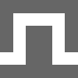

#[ツマミ怖くないっ！シンセ講座](http://fms-cat.github.io/synth/)
##第1回 オシレータ
( Saw, Square, Triangle, Sine )
最初はオシレータです。オシレータとは発振回路という意味です。難しいですね。めでたしめでたし。
とりあえず、-1から1までの間で振動する電気信号を出す感じです。今回はこの信号がそのままスピーカーに行くとどういう音が鳴るか？というのがテーマです。

代表的な４種のオシレータ。
###

ノコギリ波 ( Saw )
まず最初にノコギリ波です。上の画像のピンク色のものですね。まさにノコギリ！という形をしています。
鳴らしてみると、まさにシンセサイザーという感じの音が出てくると思います（？）。
ベタな例ですが、 YMO - Rydeen の特徴的なリードがノコギリ波ですね（生のものではないですが）。
実際には、今回紹介するオシレータの音を「フィルター」や「モギュレーション」などといったシンセの機能を用いて調理していったり、オシレータ自体を2つや3つ、あるいはそれ以上に増やしたりしていくことで音を作っていきます。
でも、もちろん生の音でも十分かっこいいですよね。美味しいですよね刺身。
###  スクエア波・矩形波・パルス波 ( Square )
続いてスクエア波です。上の画像の緑色のものです。四角いです。
正確には スクエア波≠パルス波 であり、スクエア波はパルス波の特殊なケースです。
パルス波については、ひと通り音が作れるようになってから説明するつもりなのでもうちょっと後ですね。
鳴らしてみて、ファミコンっぽい！と思ったなら、それは正解です。
ファミコンの音源は、パルス波のオシレータ2つと、後述する三角波のオシレータ1つと、ノイズのオシレータ1つを主に使用しています。
（ノイズについては今回紹介しても良かったけど、また今度にします。）
ゲームボーイの起動音が一番わかり易いかな？
###

三角波 ( Triangle )
三角波です。上の画像の青色のものです。三角です。
ノコギリ波・矩形波に比べて、音量が小さいですね。音の大きさは音の信号の微分が関係しているので、形の鋭いノコギリ波や矩形波に比べると音量が小さくなってしまいます。
三角波といったらもうコレしか無いよね。星のカービィよりグリーングリーンズ。メインメロディが三角波ですね。
ゲームボーイとファミコンの音源は少し違うみたいですが、三角波を用いた楽曲の中で一番印象に残っているのはコレです。
三角波の出番は…正直あまり思いつきません…だれか意見願います…
###

サイン波 ( Sine )
サイン波です。上の画像の赤色のものです。サインですね。全ての波の根源。ああ美しい。
サイン波も三角波同様、音量が比較的小さめです。あれ…もしかして振幅と周期が一定の波の中では一番音量が小さいんじゃ…？とか今気づいてしまった。（興味がある人は微分してみよう！）
生のサイン波が用いられるシチュエーションは結構たくさんあって、物理の時間にやった音叉とか、NHKの時報とか、放送事故のときの1000Hz Sineとか、たくさんあります。
サイン波はシンセサイザーでも多く使用されています。
シンセサイザーの先駆であったテルミンはサイン波を出すし、オルガン（電子楽器？）もサイン波を複数組み合わせているし、加算合成シンセと呼ばれるものは、上に挙げた3種の波をサイン波の合成によって作っていますし、出番は本当にたくさんあります。
---
上に挙げた４つがシンセサイザーにおいて最も重要な４種のプリミティブなオシレータだと思います。これらのオシレータは普通のシンセであればどれも使えると思います。
先程も述べたとおり、これらを組み合わせたり、変化を加えたりといった「調理」をしてシンセサイザーで音を作っていく、というのが音作り基本的な流れとなっています。
次回は「エンベロープ ( Amp, ADSR )」の予定です。
なんか、自分自身オシレータを再認識できたような気がする。良いね。
 代表的な４種のオシレータ。
###
代表的な４種のオシレータ。
###